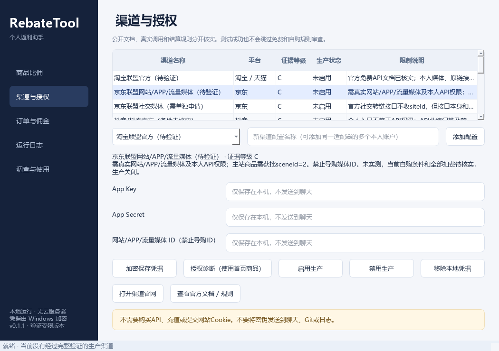

01 / 识别
商品链接与平台识别
识别淘宝、京东、抖音的常见商品链接与分享内容。需要合法接口解析的短链和口令会显示限制，不把无法核对的内容当成已确认商品。
REAL INTERFACE / 实际软件界面
界面留给真实状态，金额留给真实接口。
渠道页展示各渠道的证据等级、生产状态与限制说明。截图中的凭据输入框为空，不包含个人订单、密钥或账户信息。

DEVELOPMENT STATUS / 开发状态
截至 2026 年 10 月 27 日。以下状态不代表平台官方合作、认证或接口授权。
| 平台 | 当前进展 | 查询 / 转链 / 订单 |
|---|---|---|
| 淘淘宝 / 天猫 | PC 客户端媒体备案资料准备中；应用权限待核实 | 待授权与验证 |
| 京京东 | 已提交官方工单；候选接口尚未完成本人权限验证 | 待授权与验证 |
| 抖抖音 | 调查合法免费接入条件，当前未启用生产渠道 | 调查中 |
LOCAL BY DESIGN / 本地架构
Python + PySide6 + SQLite，无需自建云服务器或付费数据库。每个平台使用独立适配器，只有通过授权、费用及规则检查的渠道才能进入生产流程。
ABOUT REBATETOOL / 关于项目
RebateTool（个人返利助手）是一款由个人开发、用于个人学习与自用的 Windows PC 客户端，主营方向为电商购物辅助。软件处于测试阶段，尚未完成真实 CPS 业务接入。
本页是项目官方介绍页，不是购物网站、返利交易平台或 API 服务商网站；不提供在线交易、充值、付费会员或广告推广。
当前软件用于个人本地测试。本介绍网站暂不提供公开 EXE 下载或返利软件完整源码，只公开本网站的静态页面。
它们仅是未来可能的扩展方向，当前没有开发或上线。是否需要额外媒体备案、接口权限及场景审核，将在实施前向平台核实；不能沿用 PC 客户端备案作为默认授权。
本站没有表单、登录、分析脚本、广告或第三方嵌入，不收集商品链接、订单或 API 凭据。访问由 GitHub Pages 托管，托管服务会按其隐私声明处理必要的访问日志。
GitHub 隐私声明 ↗没有。本项目与淘宝、天猫、京东、抖音之间不存在已核实的官方合作或认证关系。媒体备案、应用权限、软件数字证书和自购结算规则均须分别核实。